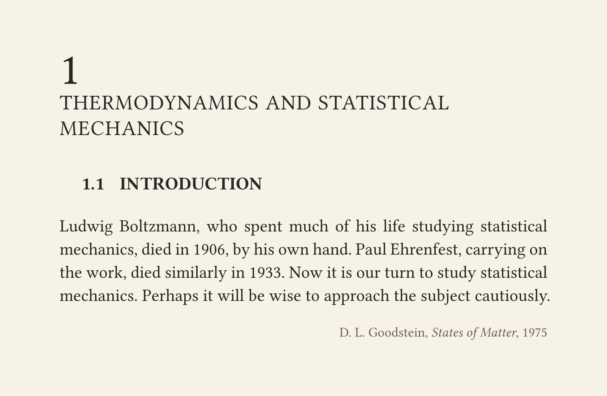
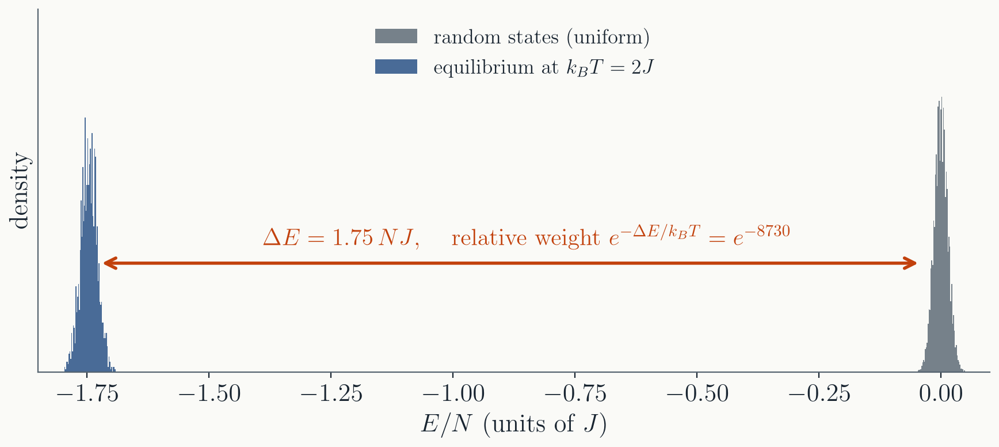
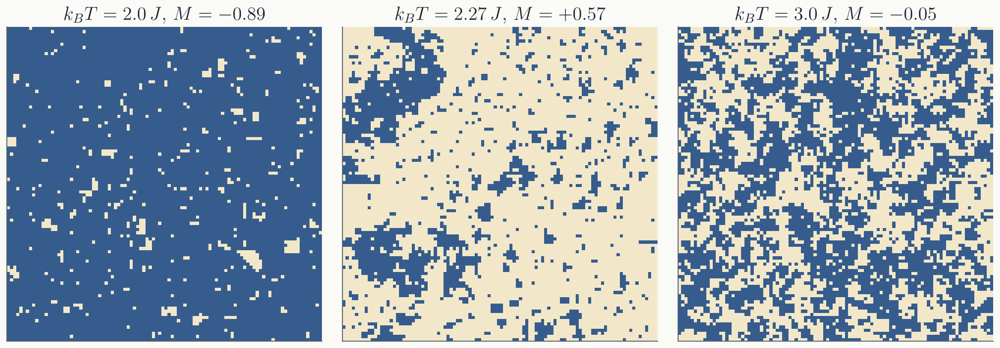
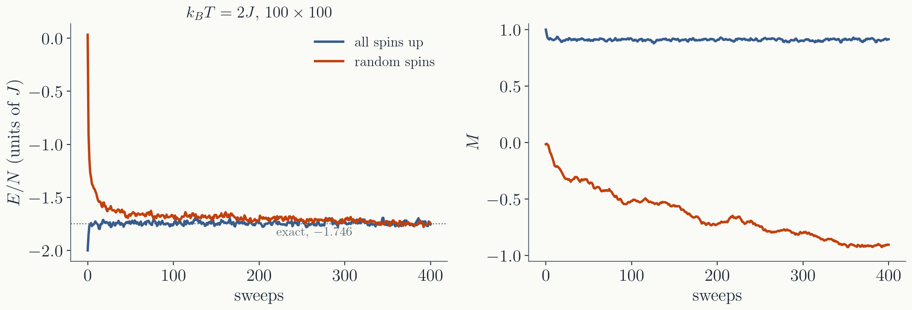

Statistical mechanics and the Metropolis algorithm
Prof. Alex Chen
Department of Physics
Washington University in St. Louis
Last time
An integral is the average of the integrand over random
points, with an error that falls as $1/\sqrt{N}$ in any
number of dimensions.
Importance sampling draws the points from
a density $p$ with the shape of the integrand and averages
$f/p$. For a thermal average the right $p$ is the Boltzmann
weight itself, but we had no way to draw from it.
Today we build that way. It is a random
walk through the states of the system that visits each one in
proportion to its Boltzmann weight.
Part I · Thermal averages
Statistical mechanics in three slides

The Boltzmann distribution
A system in equilibrium with a heat bath at temperature $T$
is found in the state $s$, with energy $E_s$, with
probability
The heat capacity is the variance of the
energy. A sampling method that gives $\langle E \rangle$ and
$\langle E^2 \rangle$ gives $C_V$ as well, with no derivative
and no second run at a nearby temperature.
Each site of a square lattice carries a spin, and the sum
runs over nearest-neighbour pairs. Aligned neighbours lower
the energy by $J$, opposed ones raise it by $J$.
At $T = 0$ all spins align and $|M| = 1$.
At high $T$ the spins are random and $M = 0$. In between,
Onsager showed in 1944, there is a sharp transition at
$k_BT_c = 2J/\ln(1 + \sqrt{2}) = 2.269\,J$.
It is the simplest model of a
ferromagnet, and the simplest system with a phase
transition.
The sum is impossible
A $100 \times 100$ lattice has $2^{10000} \approx 10^{3010}$
states. For this one model Onsager found a way around the
sum in 1944, with no field and in two dimensions, and nobody
has done it in three dimensions or with a field. For almost
any other system the sum simply cannot be done.
Monte Carlo integration says to estimate
the sum by averaging over random states. Drawing states uniformly, that
is flipping a coin for every spin, gives the grey histogram
on the next slide.
Uniform sampling never lands on a state
that contributes. We have to draw states from the Boltzmann
distribution itself.
Where the states are

Energies of $20{,}000$ random $100 \times 100$ states, and of
$2000$ states drawn from the Boltzmann distribution at $k_BT =
2J$ by the method of Part II.
What we need
If we can draw states $s_1, \dots, s_N$ with probability
$P(s)$, then by importance sampling
The inverse transform is useless
here: it needs the normalization $Z$, which is the
sum we cannot do.
We need a method that uses only ratios
$P(s')/P(s) = e^{-\beta (E_{s'} - E_s)}$, in which $Z$
cancels.
Part II · Markov chain Monte Carlo
A random walk with the right stationary distribution
A Markov chain
A Markov chain is a sequence of states $s_1, s_2, s_3, \dots$
in which the next state is drawn from a probability $T(s \to
s')$ that depends on the current state only, not on the
history.
$T$ is a transition matrix. Let $i$, $j$ label possible states, then $T_{ij} \ge
0$ and $\sum_j T_{ij} = 1$, since the chain must go
somewhere.
If the chain is in state $i$ with
probability $p_n(i)$ at step $n$, then $p_{n+1}(j) = \sum_i
p_n(i)\, T_{ij}$.
Suppose that at some step the probabilities
are a particular set $\pi_i$, and that one more step returns
the same set, $\sum_i \pi_i\, T_{ij} = \pi_j$ for every $j$.
Then the probabilities never change again. Such a $\pi$ is
called the stationary distribution of the chain.
The start is forgotten
Take a chain
with three states and this transition matrix, put it in
state $1$ with certainty, $p_0 = (1, 0, 0)$, and apply
$p_{n+1} = p_n T$ twelve times. Then repeat from state
$3$.
Both runs reach the same probabilities, $\pi = (0.238, 0.429,
0.333)$, within ten steps. The stationary distribution depends
on $T$ alone, not on where the chain started.
Detailed balance
A sufficient condition for $\pi$ to be stationary is that the
flow between every pair of states balances:
$$
\pi_i\, T_{ij} = \pi_j\, T_{ji} \qquad \text{for all } i, j .
$$
Summing over $i$ gives $\sum_i \pi_i
T_{ij} = \pi_j \sum_i T_{ji} = \pi_j$, which is $\pi T =
\pi$.
For the Boltzmann distribution the
condition reads $T_{ij}/T_{ji} = e^{-\beta (E_j - E_i)}$,
and $Z$ has cancelled.
The Metropolis rule
Propose a new state $s'$ from the current $s$ by a symmetric
rule, one that proposes $s$ from $s'$ equally often. Accept the
proposal with probability
A move that lowers the energy is always
taken. A move that raises it by $\Delta E$ is taken with
probability $e^{-\beta \Delta E}$.
If the proposal is rejected the chain stays
where it is, and the current state is counted again.
Metropolis for the Ising model
Pick a site $i$ at random and propose to flip $s_i$.
The energy change involves the four
neighbours only:
$$ \Delta E = 2 J\, s_i \sum_{j \in \text{nbrs}(i)} s_j \in \{-8J, -4J, 0, 4J, 8J\} . $$
If $\Delta E \le 0$ flip. Otherwise draw
$u$ uniform in $(0, 1)$ and flip if $u < e^{-\beta \Delta
E}$.
Update $E$ by $\Delta E$ and $M$ by
$-2 s_i / N$ when the flip happens. Never recompute the
sums over the lattice.
One sweep is $N$ attempts, so that every spin
is offered a flip once on average.
What equilibrium looks like

$100 \times 100$ lattices after $3000$ sweeps from random
starts, below, at, and above $T_c = 2.269\,J$.
Burn-in

The chain starts wherever we put it, and the early states are
not equilibrium states. Discard them. How many depends on the
start, the temperature, and the quantity.
Measuring
After the burn-in, every state of the chain is a sample from
the Boltzmann distribution, and
The variance of the energy gives $C_V$
directly, from the same run.
Successive states differ by one spin, so
they are far from independent. The $1/\sqrt{N}$ error bar
counts independent samples, and the chain has
fewer of them than it has states.
Beyond spins
Nothing in Part II used the lattice. For any distribution
$P(x)$ known up to a constant, a proposal $x' = x + \delta$
with a symmetric random $\delta$ and the acceptance
produces a chain whose states are distributed as $P$.
Continuous systems such as a gas of atoms
are sampled by moving one atom at a time.
A posterior probability in data analysis
is a $P(x)$ known up to a constant, and this is how it is
sampled.
Summary
Thermal averages are sums over states weighted by
$e^{-\beta E}/Z$, and $\ln Z$ yields $\langle E \rangle$ and
the fluctuation formula for $C_V$. The sum
itself cannot be done, and uniform sampling never finds the
states that matter.
A Markov chain whose transition
probabilities satisfy detailed balance with the Boltzmann
weights converges to that distribution from any start, and
needs only energy differences.
The Metropolis rule, accept with
probability $\min(1, e^{-\beta \Delta E})$, satisfies it. For
the Ising model a move is one spin flip and costs four
neighbours. Discard the burn-in, then average.